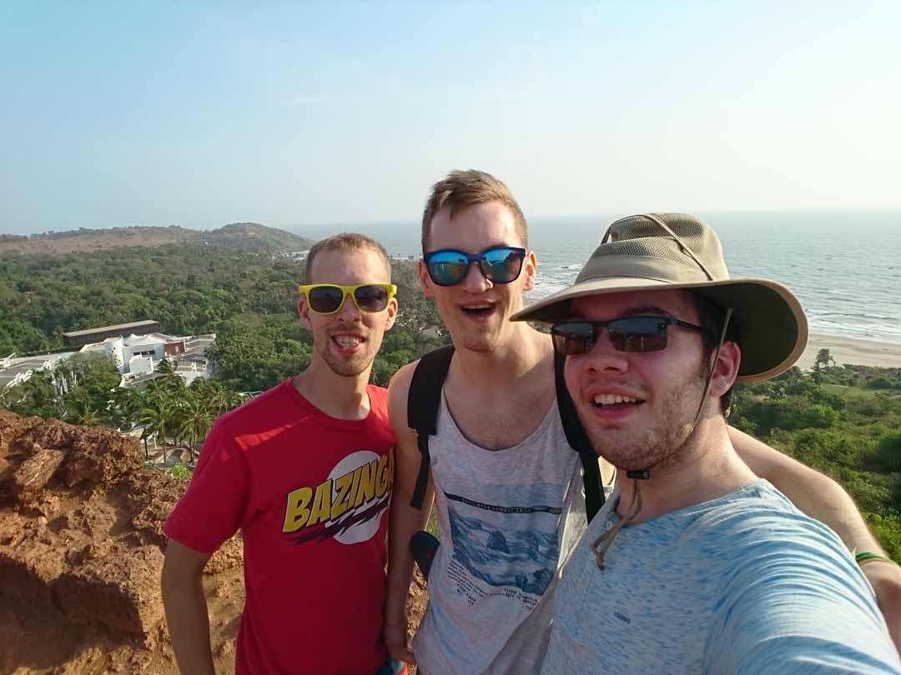

As a teacher I got many chances to organise workshops and help the Chandigarh University students to learn new things, new technologies.
The University was very grateful for my initiatives and even handed out certificates on the end of each workshop!

My Workshop Front-end Development went great! Next up was a workshop about PHP and MySQL and the students sure were eager to follow everything I organised.

Even so far from home I wasn't alone! My best friends came over for a visit, and together we explored India!
Traintrip from mumbai to goa to bangalore and to kochi through wayanad and still the best trip I had to this date.
Next to workshops I was also in charge of some Network & Infrastructure Courses. My class of 2nd Year Masters in Computer Applications sure was happy to get
to know how to manage and work in Linux + setup the basic services!
The beauty of India cannot be described by the words given to us by the oxford dictionary.
This photograph, taken by my phone grasps the unkept beauty of the Himalayan Hills in Manali, Himanshal Pradesh. Ah India will never ceize to amaze me.
The cow is a religious omen. You can find them anywhere, on the grass, on the roads or in the middle of your driveway eating your flowers.
If that's the case than sorry, you have an extremely valid excuse not to leave your home that day.
A far away trip but also far away friends. I mada a lot of intercultural connections and learned a lot of the ways of other people,
with another background, another way of looking at life. Each of these friends enriched me into becoming the human I am today.
No matter how far I'll go, people will always know me as that enthusiastic computer geek who came and stole the show.
I enjoyed my life to the fullest. Do you?

Travelling is my passion and together with my friends I'm able to do and see a lot of this world. Discovering new places, learning new things...
I want to see what this planet has to offer. And India is an awesome start, especially with awesome friends, priority #1
I cannot mention my internship to India without showing you the most touristic photograph ever. An amazing building visited on an almost equally amazing trip. Thanks Sergio for the good company.
"Is it possib...?" YES! In India, everything is possible. And so is riding around on a camel. In Jaiselmer we went on a 3-day safari, survived in the desert,
managed water supplies, made fire from dried savanna wood and cooked our own meals! This gave me the awesomest thrill - Going back to basic!
Ah the Holi Festival, maybe the greatest national festival I have ever encountered! On Holi, whole india buys paint and throws it on each other, no matter race, stance, class or anything.
I threw paint on cows, cops, friends, teachers and hotelowners as they would give me as much from their share as they could.
There is a saying; Holi is the only festival that you don't have. Holi is meant to be played.
Rishikesh was literal heaven on earth. Being the spritual center of India this place was the epicentrum of inner peace, calm and relaxation.
If you ever want to forget your stress and day to day rituals, go to rishikesh and find... yourself.
My experiences in India changed me and thought me a lot. I am not longer limited to the western ways of handling things.
They learned me that nothing is really a problem if you have a no-bullshit hands on attitude. Even the people in the poorest slumbs
lived happy from one day to the other, enjoying the gift of life without worrying. A wonderful and rich experience, which I will live by for the rest of my life.